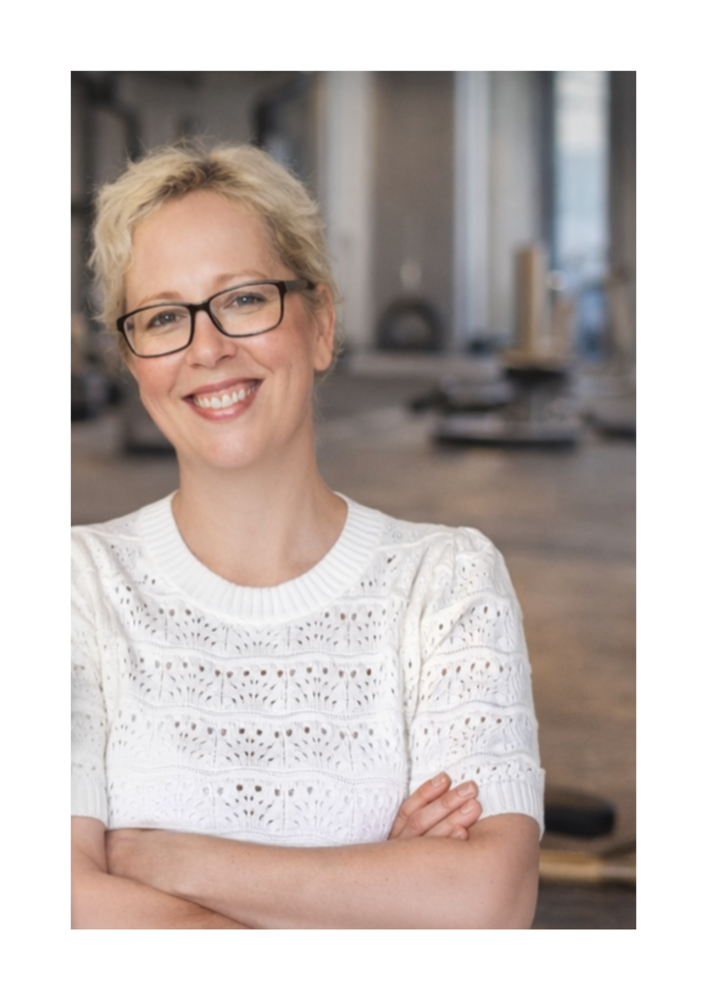

Ich zeige dir, was auf Pinterest wirklich funktioniert. Kein Hochglanz, kein Hustle – nur ein System, das läuft.

Ich bin Hausfrau und Autorin von Kochbüchern und Kinderbüchern. Ich lebe auf einem kleinen Hof mit Pferden, Hühnern, einem Hund, einem Kater, einem Vogel – und einigen Bienenvölkern, deren Honig ich selbst ernte. Mein Mann ist nach einem Schlaganfall schwerbehindert – ich begleite ihn als Pflegeperson durch den Alltag.
Inmitten all dessen habe ich Pinterest zu meinem Marketingkanal gemacht. Ich weiß, wie es sich anfühlt, wenn die Zeit knapp ist und man trotzdem etwas Eigenes aufbauen will. Deshalb zeige ich dir Wege, die wirklich funktionieren – ohne dass du dein Leben umkrempeln musst.
Pinterest ist kein Zufall. Es ist ein System. Und dieses System kann ich dir beibringen.
Ruhig starten. Stabil verkaufen.
Meine Produkte ansehenZwischen Pferde versorgen, Pflege und Schreiben habe ich gelernt: Effizient zu arbeiten bedeutet nicht, weniger zu erreichen.
Ich schreibe – und ich weiß, wie man aus eigenem Wissen ein Produkt macht, das anderen wirklich nützt.
Pinterest funktioniert wie eine Suchmaschine. Wer das versteht, gewinnt Reichweite – auch ohne tägliche Präsenz.
Klare Werkzeuge für deinen Pinterest-Start – direkt nutzbar, ohne Vorkenntnisse.
In 30 Tagen vom ersten Gedanken zum fertigen, verkaufbaren digitalen Produkt. Strukturiert, umsetzbar, ohne Social-Media-Stress.
Zum Kurs →Dein System für strategisches Pinterest-Wachstum: Pin-Tracking, Account-Analyse und Keyword-Planer in einem.
Zum Logbuch →8 häufige Fehler und wie du sie sofort behebst. Kostenlos herunterladen – direkt umsetzbar.
Kostenlos holen →Auf meinem Pinterest-Profil @marion_schfers teile ich regelmäßig Tipps rund um digitale Produkte, Pinterest-Strategie und das Thema "Klar starten – stabil wachsen".
Pinterest ist keine Social-Media-Plattform im klassischen Sinne – es ist eine Suchmaschine. Meine Pins bleiben monatelang sichtbar und bringen kontinuierlich neue Leser zu meinen Inhalten.
📌 Auf Pinterest folgen → @marion_schfers@marion_schfers
Pinterest · Strategie · Digitale Produkte
Kein Hochglanz – nur echte Einblicke. Was funktioniert, was nicht, und warum.
Alle reden über Instagram und TikTok. Dabei ist Pinterest für digitale Produkte kaum zu schlagen – wenn man weiß, wie es funktioniert.
WeiterlesenPinterest belohnt keine Perfektion. Pinterest belohnt Klarheit. Diese fünf Prinzipien kannst du sofort umsetzen.
WeiterlesenEin ehrlicher Rückblick – was funktioniert hat, was nicht, und was ich heute anders machen würde.
Weiterlesen